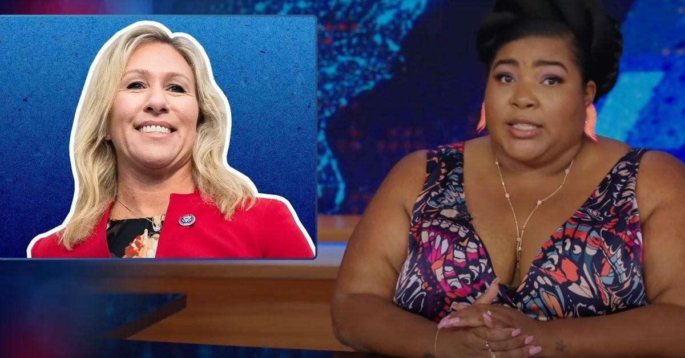

Marjorie Taylor Greene Gets Brutal New Nickname From 'Daily Show' Host Dulcé Sloan“The Daily Show” guest host Dulcé Sloan on Thursday tore into Rep. Marjorie Taylor Greene (R-Ga.) amid the far-right lawmaker’s attempt to oust Mike Johnson (R-La.) as House speaker over his push for aid to Ukraine. Greene has “the strongest Karen energy I have ever seen,” Sloan cracked after airing a montage of her attacks on Johnson. “Damn,” said Sloan. “Last time I saw a white lady that pissed about a bill, she was getting kicked out of a Chili’s. I don’t know if she’s going to get Mike Johnson fired, but she’s definitely getting store credit for something.” Sloan then debuted a new nickname for conspiracy theory-peddling Greene. “The crazy thing is if Capitol Hill Karen does get the speaker fired, that’ll be the second time in six months,” she noted, before telling Republicans the harsh truth that: “If you’re constantly firing speakers, maybe the problem is with you.” Watch the video here: |
 |